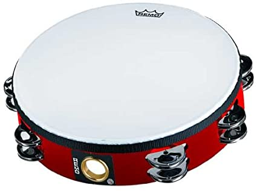
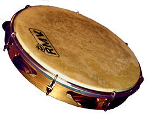

TAMBOURINE
Tambourine, small frame drum having one or two skins nailed or glued to a shallow circular or polygonal frame. Tambourines can be played by either being held in the hand and hitting or tapping the instrument or they can be mounted on a stand like cymbals in a drum set. When mounted, the instrument can be played by hitting it with drumsticks. When held, a tambourine can be tapped against the body, jingled, struck, or shook in order to produce sound. It is typically played by either the drummer or lead singer in modern music, depending on how it is played.
Tambourines have existed since ancient times in Ancient Rome, Ancient Greece, India, the Middle East, and in Mesopotamia. They were originally used for religious purposes. The name 'tambourine' originates from the French word 'tambourin' derived from the word 'tambour' which means 'drum'. Crusaders brought the instrument to Europe in the 13th century. Called timbrel or tabret, it continued to be played mainly by women and as accompaniment to song and dance. The modern tambourine reentered Europe as part of the Turkish Janissary musical bands in vogue in the 18th century.